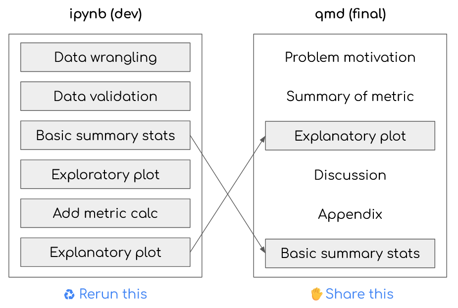

| Executive Orders Issued by Term | ||
| Normalized for first 184 days in office (12.6% of term) | ||
| Term | Count | |
|---|---|---|
| Point in time | Full term | |
| (2005) Bush | 13 | 118 |
| (2009) Obama | 22 | 148 |
| (2013) Obama | 14 | 130 |
| (2017) Trump | 42 | 220 |
| (2021) Biden | 52 | 162 |
| (2025) Trump | 174 | - |
Data science stakeholder communication is hard. The typical explanation of this is to parody data scientists as “too technical” to communicate with their audiences. But I’ve always found it unsatisfying to believe that “being technical” makes it too challenging to connect with the 0.1% of the population so similar to ourselves that we all happen to work in the same organization.
Instead, I believe communication is rarely taught intentionally and, worse, is modeled poorly by educational communication which has different goals. This leads to an “explain all the things” mindset that is enabled by literate programming tools like notebooks. It’s said that “writing is thinking”, and literate programming excels at capturing our stream of conscience. However, our stream of conscience does not excel at succinct retrospective explanations of our work’s impact.
Data scientist do not have a communication problem. They have a problem in ordering their story for impact and engagement, driven by their background, context, and tools.
Fortunately, Quarto’s new embed feature bridges the gap between reproducible research and resonate story-telling. This simple feature allows us to cross-reference chunk output (tables, plots, text, or anything else) between documents. The ability to import reproducible results can completely change our writing workflow. It separates the tasks of analysis from summarization and changes our mindset to one of explaning “all the things” to curating the most persuasive evidence for our plaintxt arguments.
In this post, I discuss some of the reasons why I think data science communication goes wrong, why changing story orer helps, and how Quarto embeds can help us have reproducible results and a compelling story at the same time.
This topic has been on my mind for a while, and I was recently motivated to get this post over the finish line while talking to Dr. Lucy D’Agostino McGowan and Dr. Ellie Murray on their Casual Inference podcast. Thanks to them for the energy and inspiration!
Note
This post assumes you know about the basics of Quarto.
TLDR: Quarto is a tool for rendering documents, PDFs, blogs, websites, and more from markdown and embedded code chunks. Thus, it supports literate programming, reproducible research, and much more (including this blog).
Why data science communication is hard
The deck is stacked against good communication of data science outcomes. Most of our experience with communication comes from education where it serves fundamentally different purposes. Educational communication tends to be linear and step-by-step, but professional communication should often lead with the key takeaway.
Communication in education
The majority of technical communication consumed and produced by early career professionals happened during their education. However, academic1 communication has a fundamentally different goal, so it does not provide an effective model.
Academic communcation leans towards exhaustive knowledge sharing of all the details – either because the target audience needs to know them or the audience needs to know that the communicator knows them.
When students are communicating (completing problemsets or assignments), they have the goal of proving their mastery. Their audience (professors, TAs) can be assumed to have deeper knowledge of the topic than the presenter, and communication is intended to demonstrate comprehensiveness of knowledge – or at least to “show their work” for partial credit.
When students are consuming communication (from an instructor or textbook), they experience communication with the goal of exhaustive knowledge transfer. Instructors or textbooks aim to make the audience know what they know and to be able to execute that information independently.
Communication in industry
These are decidedly not the objective of professional communication. We are given a job because we are judged to have the mastery of a topic specifically that no one else has the time, energy, or desire to think about in enough detail. The goal is not to show what you know (or, how much work you did along the way) or to get the audience to your intimacy of understanding.2
Instead, the goal is to be an effective abstraction layer between the minute details and what is actually needed to act. Communication is an act of curating the minimal spanning set of relevant facts, context, and supporting evidence or caveats.3
Story structuring
Roughly speaking, this means we are used to talking about data science work in the procedural order:
1. I wondered...
2. I prepared my data...
3. I ran this analysis...
4. This gave me another question...
5. That {did/not} work...
6. So finally I ended up with this...
7. I learned...However, for effective communication, it may be more useful to structure our work with progressive disclosure:
1. I wondered...
7. I ultimately found...
6. This is based on trying this...
(3-5). We also considered other options...
2. And this is all based on this data, details, etc.In short, we want to tell the story of why others should care about our results – not the story of how we got the result.4 Then, it helps turn a presentation or written document into a “conversation” where they can selectively partake of the details instead of waiting for the main point to be revealed as in a murder mystery.
Communicating and the data science workflow
Moving between story structures isn’t just a matter of changing our mindset. Organizational pressures and tooling also bias us towards poor communication practices. I’ve always loved the phrase “writing is thinking”, but the corrolary is that your writing cannot be clearer than the amount of time you have take to think and synthesize what actually mattered from your own work.
Timeline pressures push us towards more procedural stories. The story you yourself know about your work is the linear one that you just experienced – what you tried, why, and what happened next. If you need to communicate before you can synthesize and restructure, you will be caught flat-footed sharing anything but a procedural story. It’s likely better to begin drafting your final communication from a clean slate but tempting to reuse what exists.
What’s more, even the best tools don’t set us up for success. I’ve long been a fan of literate programming tools like R Markdown and Quarto. I used to believe that these allowed me to effectively document while developing. This is true for documenting my raw stream of conscience for my own future reference or other colleagues. However, notebooks narratives are by definition in the procedural order.
This mindset is further embed as we think about working reproducibly and structuring our work into DAGs that can be rerun end-to-end. If I want to create a final manuscript that is fully reproducible with plots and tables generated dynamically (no copy pasting!), literate programming may feel like it is constraining me towards running things in order. (This isn’t entirely true, as I’ve written about before with R Markdown Driven Development.)
Using Quarto embeds to improve your workflow
So, we need to structure our stories differently for effective communication, but neither our timelines or tooling is conducive to it? That’s where the Quarto embed feature comes into the picture.
Quarto embed overview
The embed shortcode lets us reference the output of another .qmd or ipynb Quarto document in a different Quarto file. This requires two steps:
First, in the original notebook we label the top of the chunk whose output we wish to target, e.g. in our notebook analysis.ipynb:5
#| label: my-calc
1+1Then in our main document we can pull in the output (and optionally the code) of that calculation, e.g. in a final Quarto document final-writeup.qmd we could add:
{{< embed analysis.ipynb#my-calc >}}This works with any sort of cell output including raw print() statement output, plots, tables, etc.
Usage patterns
Why are embeds a game-changer for data science communication? Because writing is thinking and storytelling is curation. Embeds can help us switch our mindset away from “showing our work” and towards providing persuasive evidence that supports our narrative.
The workflow I recommend is:
- Still use good practices to modularizes steps like data pulls, separate modules for reusable functions, etc.
- Do the analysis and last-mile transformation you would do in a Jupyter notebook, leaving the commentary that you would along the way
- After you’re done, think about what is important. What does your audience need to see and in what order?
- Then take a step back and write your actual story in a Quarto notebook
- Selectively embed compelling evidence at the right points in your narrative
This is illustrated in the figure below:

This simple shortcode unblocks us from critical storytelling and workflow challenges:
- We can generate content in rerunnable linear notebooks
- We can start writing from a blank slate to ensure that we are focused on substance and not just sheer volume of content
- We can then selectively curate output worthy of inclusion in a final document
- We can insert these in the order that makes sense for the story versus for generation
- This can exist without deleting or modifying our notebooks that capture the full thought process
- As a bonus, our final document need not be a gnarly
.ipynbbut a plaintext.qmdto make version control, editing, and collaborating with noncoding contributors easier
It’s not just code output that can be imported either. Perhaps you already wrote up an introduction framed as an experimental design or a proposal? Other full markdown files can similarly be inclued with the includes shortcode. (includes adds the unrendered text of another .qmd file, including any code chunks to be executed, to your main .qmd; whereas, for embeds, we are referencing the output of another file without rerendering.)
Tip
This does not mean you should just cram all your analysis into your notebook and not worry about code quality, organization, or commentary!
The goal here is to have two good results for two different audiences without the overhead or reproducibility risks of maintaining them separately.
Demo
To give a quick demo, I’ll made a separate notebook that just pulls some data from an API, cleans it up, and makes a few aggregations and plots. But suppose I doubt you’re interested in any of that. If you’ve read this long, you seem to trust me to do some amount of data stuff correctly.
So instead, I just put the following line in the .qmd file that is creating this post:
{{< embed raw-analysis.ipynb#tbl-pit-eo >}}That produces this:
Perhaps I thought it was better to show you a simple table first. But, then I want to show you a more complex plot. You don’t have to see that in my original notebook I actually made the plot first. (Actually, I made two plots, but only one seemed important to show.) So, I write:
{{< embed raw-analysis.ipynb#fig-cum-eo >}}That produces this:
If I had done a particularly good job of summarizing my thoughts immediately after seeing this plot, I might have already written them in a markdown cell over there. Embeds technically also work to embed markdown cells, so the following line you see is embedded from my other notebook also:
However, I don’t advocate for embedding text. I think using a final qmd file as a single, self-contained spot to document your analysis has a lot of benefits.
And then I could go on to add my relevant thoughts and analysis of specific to that plot. But, in this case, another part of professional communication is staying on topic.
Footnotes
Caveat, here I mostly am reflecting on US undergraduate education in STEM-related disciplines. And, yet, even narrowly scoped this is certainly a very sweeping generalization.↩︎
The aphorism “You don’t pay the plumber for banging on the pipes. You pay them for knowing where to bang.” really sums up what it means to be a professional. Similarly, you don’t hire them to tell you about why they are banging where.↩︎
Personally, my professional communication became a lot better only after I grew senior enough to be on the receiving end of a lot of communication. At the beginning of my career, I wondered: “Didn’t my more senior audiences get to those roles because they were smart? Didn’t they want all the details?” But we must considered the audience’s context – not just their background knowledge but also their environment. Considering your executive audience as people who have thought about 7 different topics at 20 minute intervals before talking to you today frames a whole different set of constraints. My overall philosophy for communication over time has shifted more towards “How to be kind to burned out brains” than “How to get other people excited by all the cool stuff I did”.↩︎
I once coached an analyst who kept writing stories in this order. Responding to my feedback, they asked “But aren’t we supposed to tell a story?” This made me realize how overloaded and perhaps misleading the phrase “data storytelling” has become. Yes, we are telling the story from the data and not about analyzing the data. The analyst is not the main character!↩︎
FWIW, I find Quarto can get confused if we don’t put the blank line after the label line.↩︎